Manual pre
AUTODESK EAGLE
Editor Plošného Spoja
Návrhový systém EAGLE
Ako začať svoju prácu
Editor schém
Editor plošného spoja
Výstupy z návrhového systému
Route
1. Ručným ukladaním vodičov dosiahneme želaný vzhľad (pozri obr. nižšie). Pri menších DPS ukladáme ručne celý spoj, pri zložitejších si môžeme pomôcť autorouterom (viď ďalej), ale aj tak je potrebné takto vytvorený spoj upraviť ručne.
Na vytváranie spojov použijeme nástroj ROUTE . Štandardne vedieme spoje na hladine 16 BOTTOM.
Nastavíme si šírku spoja WIDTH. Šírka je závislá od prúdu, hrúbke medi a dovolenom oteplení.
Spôsob vedenia (zalamovanie) meníme pravým tlačidlom alebo na paneli volieb:
Pri ukladaní spojov nás vedie vzdušný spoj. Pre zvýšenie prehľadnosti je dbré vypnúť hladiny NAME (25 a 26) a VALUE (27 a 28).
Pri vedení spoja dodržujte nasledovné pravidlá:
vodivé spoje (vodiče) vedieme buď vodorovne alebo zvisle
šikmé spoje vedieme pod uhlom 45°
zo spájkovacieho bodu (PAD) vychádzame vždy kolmo, až potom lomíme spoj (pozri obr.)
minimálna vzdialenosť spoja od okraja dosky je 5 mm
nevytvárame ostré rohy (skosujeme spoje - pozri obr.)
dodržujeme izolačné vzdialenosti
podľa možností využívame metódu „rozliatia medi“- menej odpadov (ekológia),
na doske sa snažime používať jednotnú šírku spojov (podľa možností),
hustota spojov na doske musí byť rovnomerná,
rešpektujeme montážne otvory, spoje nevedieme v ich blízkosti.
Aj pre jednoznačnosť otočenia fólie s motívom pri výrobe DPS ale aj pre lepšiu identifikovateľnosť výrobku DPS popíšeme textom (napr. typové označenie, alebo názov zariadenia - na strane BOTTOM sa zobrazuje zrkadlovo (pohľad na monitor je zo strany TOP)
Po vytvorení všetkých spojov urobíme kontrolu a prípadné posledné úpravy:
Zmena šírky spoja
- CHANGE/WIDTH/NováHodnota; - kliknutím na spoj zmeniť
Návrat do vzdušných vodičov
- RIPUP a kliknúť na spoj; pre celý PS vybrať všetko P a použiť pomocou pravého tlačidla myši (GROUP), zvoliť RIPUP a použiť pomocou pravého tlačidla myši
Vytvorenie zlomu na spoji
- SPLIT
kontrola spojov
- vypneme hladinu 21 tPlace (obrys súčiastok), skontrolujeme vedenie spojov
Zmena puzdra súčiastky
- CHANGE/PACKAGE - kliknutím na dostupných puzdier súčiastku sa objaví zoznam dostupných puzdier